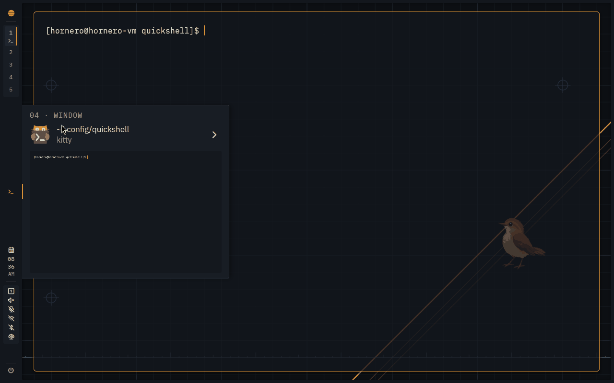
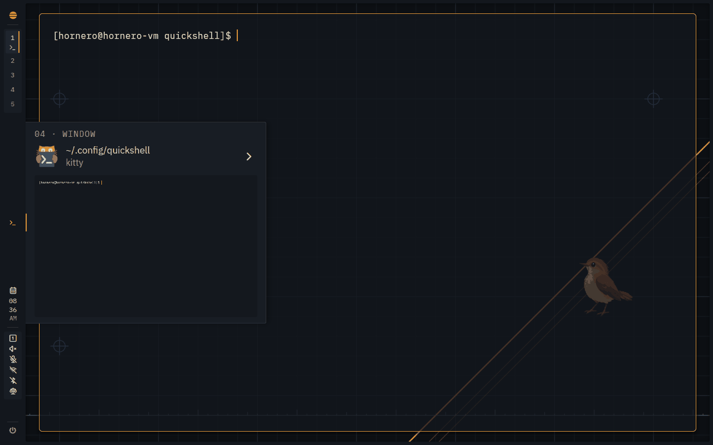

bars/rail-activewindow-hover FAIL
20261117T083452Z-bars-rail-activewindow-hover-1 · attempt 1 · 77.315 s · class product
Reason: step 11 probe failed: stdout '' != 'winfo'
Instruction
Open Kitty, hover its marker, move into the title card and detach its details.
Proof
| where | kind | note | detail | |
|---|---|---|---|---|
| ✅ | step 1 | probe | ok | |
| ✅ | step 4 | probe | ok | |
| ✅ | step 6 | probe | ok | |
| ✅ | step 8 | probe | ok | |
| ❌ | step 11 | probe | stdout '' != 'winfo' |
Product and environment
| shell_sha | 74619fab04951777b2bdba37c1b80e1d19cb66bc |
|---|---|
| config_sha | 76058860dc3631250a6cd913ddbf1271c0eebf88 |
| horneroctl | horneroctl horneroctl-v0.2.0-preview45-9-g420c73c (420c73c) |
| horneroctl_sha256 | bea50d20f272e14fb1712b880c484c7dc65eb97381759b65f895e4808a700967 |
| engine | native |
| compositor | hyprland |
| hornero_qa | 0.1.0 |
| host_kernel | 7.3.4-arch1-2 |
| qemu | QEMU emulator version 11.1.3 |
| image | signal-s74619fa-c7605886-h420c73c.qcow2 |
| outputs | 1 |
| resolution | 1280x800 |
Screenshots




Actions
{"t": 15.655, "kind": "ready", "serial": []}
{"t": 36.149, "kind": "setup", "run": "horneroctl shell preset apply hornero-left --yes", "rc": 0, "stdout": "applied preset Hornero Left (hornero-left)", "stderr": ""}
{"t": 67.254, "kind": "tokens", "theme": "hornero-signal-night", "roles": 34}
{"t": 67.254, "kind": "key", "step": 0, "value": "ctrl+space", "note": null}
{"t": 67.354, "kind": "probe", "step": 1, "value": {"run": "qs ipc call drawers state launcher", "equals": "true", "retry_s": 5}, "note": null}
{"t": 67.696, "kind": "type", "step": 2, "value": "kitty", "note": null}
{"t": 67.949, "kind": "key", "step": 3, "value": "enter", "note": null}
{"t": 68.054, "kind": "probe", "step": 4, "value": {"run": "hyprctl activewindow -j | jq -r .class", "equals": "kitty", "retry_s": 10}, "note": null}
{"t": 69.233, "kind": "pointer", "step": 5, "value": {"x": 0.024, "y": 0.49, "glide": 8}, "note": null}
{"t": 69.44, "kind": "probe", "step": 6, "value": {"run": "qs ipc call debug dump | jq -r .popout.name", "equals": "activewindow", "retry_s": 3}, "note": null}
{"t": 69.802, "kind": "pointer", "step": 7, "value": {"x": 0.1, "y": 0.325, "glide": 8}, "note": null}
{"t": 70.015, "kind": "probe", "step": 8, "value": {"run": "qs ipc call debug dump | jq -r .popout.name", "equals": "activewindow", "retry_s": 3}, "note": null}
{"t": 70.343, "kind": "screenshot", "step": 9, "value": "hornero-left-active-window-hover", "note": null}
{"t": 70.392, "kind": "pointer", "step": 10, "value": {"x": 0.356, "y": 0.325, "click": "left", "glide": 8}, "note": null}
{"t": 70.745, "kind": "probe", "step": 11, "value": {"run": "qs ipc call debug dump | jq -r .popout.detached", "equals": "winfo", "retry_s": 3}, "note": null}
Logs: logs/ · machine-readable: run.json, result.json, assertions.json, actions.jsonl